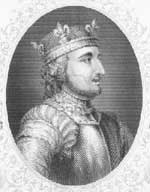

Fatih William (1027-1087), 1066 yılında İngiltere’yi işgal eden bir Norman asilidir. Eski Sakson monarşisini yıkıp kendisini kral ilan eden William hukuk, dil ve kültür alanında önemli değişikliklere imza atmıştır.

Fethin sonuçları, en belirgin şekilde kendisini dilde göstermiştir. Fransızca konuşan işgalcilerin adaya gelişi ile birlikte dilde çok hızlı bir değişim meydana gelmiştir. Günümüzdeki modern İngilizce’de yer alan pek çok sözcük Fransızca kökenlidir. Bunlarında arasında Fransızca conquerre sözcüğünden gelen conquer (fetih) da bulunmaktadır.
William, Kuzey Fransa’daki bir toprak sahibi olan Normandiya Dükü’nün evlilik dışı bir ilişkiden doğan oğluydu. 1035 yılında düklüğün başına geçti. Bu sırada sadece yedi yaşındaydı. Henüz genç bir delikanlıyken asi soylulara karşı savaştı ve zaferler kazandı. 1053 yılında aynı zamanda uzak bir akrabası olan Fransız asilzadesi Flandersli Matilda (1031-1083) ile evlendi.
İşgal 1066 yılının Ocak ayında, geride hiçbir varis bırakmadan ölen İngiltere’nin Anglosakson kralı Edward’ın (1003-1066) yerine kimin geçeceği tartışması ile başladı. Harold Godwinson (1020-1066) sonunda iktidar mücadelesini kazandı. Ne var ki William tahtta hak iddia etti ve Eylül ayında İngiltere’yi işgal etti. Hasting Savaşı’nda Godwinson’ı yenilgiye uğrattı ve öldürdü. 1066 yılının Noel günü tahta çıktı.
Ünlü Bayeux Duvar Halısı’na işlenerek şereflendirilen William’ın fetihleri, İngiltere’de büyük değişikliklere neden oldu. Londra Kulesi’nin de aralarında bulunduğu pek çok yeni kale inşa ettirdi. Eski İngiliz asilzadelerinin yerine kendi takipçilerini getirdi. İşgalden sonra Fransızca yüzlerce yıl boyunca İngiliz ariktokrasisinin resmi dili haline gelecekti. William, Domesday Book (Kıyamet Günü Kitabı) adı verilen ve Orta çağ İngilteresi’nin günlük yaşamı ile ilgili temel bir kaynak niteliği taşıyan 1086 tarihli nüfus sayımının yapılmasını emretti.
William öldüğünde elli dokuz yaşındaydı. Yerine, William Rufus olarak da bilinen oğlu
2. William (1056-1100) geçti.
Ek Bilgiler
1- Bayeux Duvar Halısı, 1070 yılında hazırlanıp Kuzey Fransa sahilindeki Bayeux Katedrali’ne asılmıştır. 70,4 metre uzunluğundaki bu duvar halısı, William’ın Anglosaksonlar’a karşı kazandığı zaferini simgelemektedir.
2- Hasting Savaşı sırasında William’ın kullandığı üç at da ölmüştür. Bunun üzerine Norman ordusunun da William’ın kendisinin de öldüğü söylentileri yayılmaya başlamıştır. Yaşadığını kanıtlamak için miğferini çıkartarak atını ordu birliklerinin arasına sürmek zorunda kalmıştır.
3- Fatih William adı, krala ölümünden yıllarca sonra verilmiştir. Kendi yaşadığı dönemde evlilik dışı bir ilişkiden doğduğu için çok daha az onurlandırıcı bir lakapla, “Piç William” olarak anılmıştır.